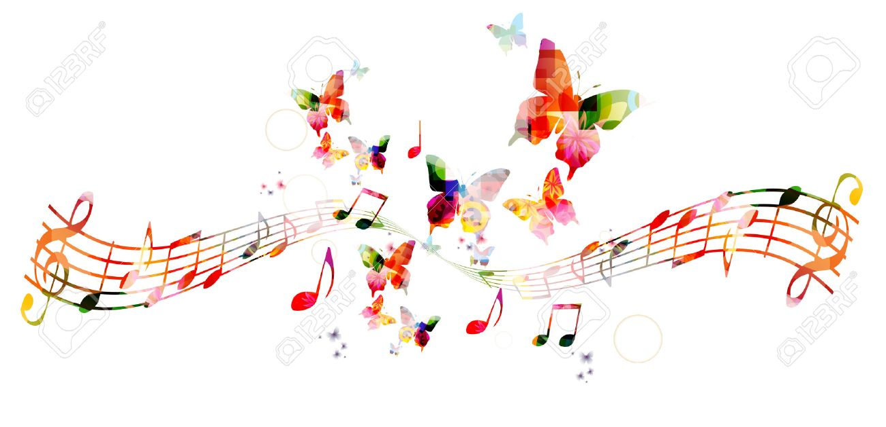
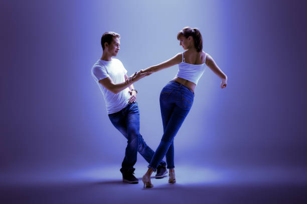
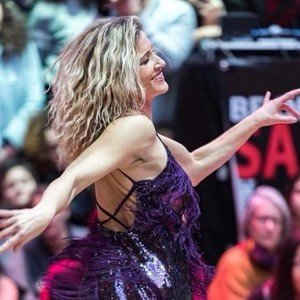
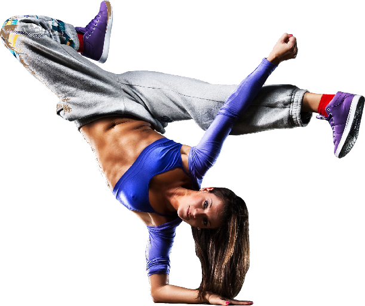
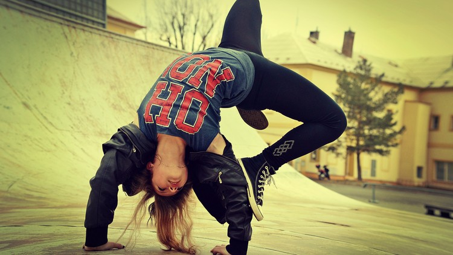
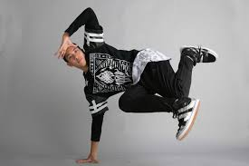
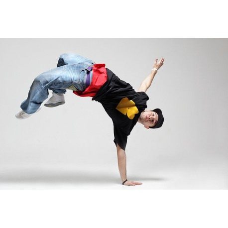

Accueil
Notre equipe


Ricardo:
Danser c’est temporairement être sur une autre planète. Oublier la journée qu’on a eue, les choses qu’on a à
faire : c’est vraiment vivre le moment présent! C’est rencontrer des gens par le simple biais d’un sourire, sans
même parfois leur parler ni connaître leur nom. Tant mieux si en plus on rencontre des gens sympathiques le
temps d’une danse ou encore mieux de nouvelles amitiés! La salsa chez Baila Productions c’est lâcher notre fou.
C’est sourire et danser jusqu’à ce que nos pieds réclament le sommeil!!!

Vanessa:
Pour moi la danse….c’est maîtriser l’art du Bonheur! Toute petite je rêvais de devenir une grande Ballerine!
Mon rêve ne s’est pas réalisé mais, aujourd’hui, j’ai l’opportunité de tremper dans la danse. La vie nous
réserve de bien drôles de surprises et ce… à tous les âges! Ma mission est de vous transmettre ma passion de la
danse.
L’ambiance, l’entraide, le plaisir et les fous rires chez Baila Productions, “Priceless!”

Andrea:
J’ai commencé à danser car je voulais faire quelque chose pour moi, quelque chose que j’avais toujours voulu
faire. Non seulement j’ai appris à danser, mais j’ai vraiment trouvé une activité qui m’apporte beaucoup de
bonheur. De plus, j’ai rencontré plusieurs nouveaux amis, certains que je considère même maintenant comme de la
famille. J’ai commencé à enseigner à Baila Productions, car c’est là une raison pour danser encore plus. Je me
sens davantage inspirée et choyée de pouvoir regarder les sourires contagieux de tous nos étudiants.

Vanessa :
J’adore pouvoir partager ma passion de la danse avec nos étudiants et les voir rayonner de confiance. Ce qui me
passionne de la salsa, c’est le feeling de se laisser emporter par le rythme de la musique et profiter du moment
présent.

Casses:
Le hip-hop est une danse urbaine qui se caractérise par des mouvements secs et précis exécutés sur des musiques
rythmées. Elle permet aux danseurs de développer des qualités physiques comme la souplesse, la force et la
coordination. Les techniques enseignées chez Destination Danse utilisent, entre autres, des pas tirés du
locking, du
popping, du waving, du breakdancing et du krump.

Fred:
Dynamique et passionnée de la danse, elle enseigne depuis plus de 14 ans et s’est occupée de plusieurs troupes.
Ses débuts ont été principalement en hip-hop, mais vite son envie d’élargir ses horizons lui a permis de
compléter son DEC en danse contemporaine à Montmorency. Au fil des années, Véro a touché au popping, wacking,
krumping et ballet classique. Elle adore jouer avec la musicalité et l’interprétation. N’ayant pas peur du
ridicule, ses cours sont bien souvent teintés d’humour. Véro sera maintenant professeure pour les jeunes adultes
en hip-hop et contemporain avec EnKdanseen septembre 2018.